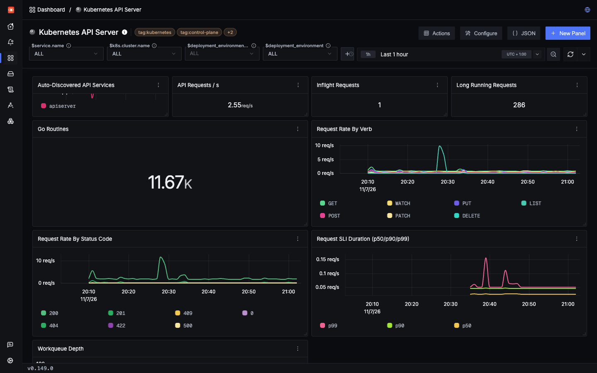

Lab 3: incident 5 of 5
The API server
The API server is the front door to your cluster. Its metrics show when a client gets noisy, but not which client, and they miss some denied requests completely. Its audit log fills both gaps.
1Trigger it
Every kubectl command, controller and operator talks to the API server, so a badly written client can affect the whole cluster. This workload has two: one that calls too often, and one that isn't allowed to do what it's asking.
2Symptom
In a real cluster, you'd see slow kubectl commands, or controllers falling behind. This flood is deliberately small and did no harm, as you'll see. The goal is to learn how to see it.
3Where to look
Open the Kubernetes API Server dashboard, and look at Request Rate By Verb.
apiserver_request_total rate, sum, grouped by verb
add the filter verb = 'LIST' and group by resource to narrow it downThen the audit log, in Logs, to see who:
service.name = 'kube-apiserver-audit' count, grouped by k8s.audit.user, k8s.audit.verb and k8s.audit.resource4Evidence
The flood
| Before | During | |
|---|---|---|
LIST requests a second, 1-minute average | 0.02 to 0.17 | 9.9 |
Average LIST pods latency | Too few requests to say | About 2 ms |
| CPU of the k3s process | 0.1 to 0.17 core | 0.07 to 0.09 core |
The rate jumped about 100-fold and the API server didn't notice. In this first run, the app sent 1,007 requests in 60 seconds, which is nothing for an API server. On a busy cluster, this panel is how you'd spot a client that matters.
Who did it?
The metric can't tell you. These are all the labels on apiserver_request_total:
code, component, dry_run, group, resource, scope, subresource, verb, versionThere's no client or user. The audit log has both, because Lab 3 turns it on. In a second run, two minutes long, this is every request it recorded, grouped by caller:
One caller made 2,014 of them: the workload's ServiceAccount, system:serviceaccount:lab3:workload, using python-httpx/0.28.1. That's exactly the number the app counted itself. Nothing else made more than 3. On a real cluster, a ServiceAccount usually belongs to one app, so this tells you whose code to look at.
If the client is your own app, its client spans show the same calls, with their URLs, because Lab 1's setup traces outgoing calls:
service.name = 'lab3-workload' AND kind_string = 'Client'That search found all 1,007 calls in the first run, and all 2,014 in the second. The audit log also covers clients you didn't instrument, such as an operator you installed.
The denied requests
This one is a trap. In the first run the app made 549 requests, and every one came back 403:
finished calling /api/v1/namespaces/lab3/secrets: {403: 549}So apiserver_request_total with code = '403' should be climbing. It isn't there at all:
| Where you look | Denied requests found |
|---|---|
apiserver_request_total, in SigNoz | 0 |
apiserver_request_total, straight from the API server | 0: no code="403" series exists |
Client spans: response_status_code = '403' | 549 |
| The app's log | 549 |
Requests refused at authorization didn't reach this counter. That's what we measured on k3s 1.26.4. Newer Kubernetes versions may report it differently, which is Untested.
The audit log has every one
In the second run the app counted 1,975 refusals, and apiserver_request_total again had no 403 series. The audit log recorded 1,975, all from the workload's ServiceAccount, and nobody else was refused that hour:
The API server writes each audit event around the whole request, including the decision to refuse it, so a refusal is logged like any other request, with its 403.
When the spans count too many
The client spans said 2,039, not 1,975. Those weren't 64 extra calls: 64 spans were stored twice. At 00:48:20 SigNoz's collector timed out writing a batch of spans to ClickHouse, and retried the whole batch. Every duplicate is in that batch, with the same span ID as its twin. Counting distinct span IDs gives 1,975 again:
count_distinct(span_id) with the same filterTelemetry is delivered at least once. A retry can store something twice, so a count of spans or logs can run slightly high.

LIST spike at about 20:28 is api_flood. The status code legend has no 403, although requests were denied in this hour. The latency panel labels its axis req/s, but it plots seconds. Seen in SigNoz UI5Root cause
labs/lab3-kubernetes/k8s/app.yaml lines 7–127# Only used by the api_flood and api_denied scenarios.
8apiVersion: rbac.authorization.k8s.io/v1
9kind: Role
10metadata: { name: list-pods, namespace: lab3 }
11rules:
12 - { apiGroups: [""], resources: [pods], verbs: [list] }This Role allows listing pods in one namespace, and nothing else. api_flood uses that permission far too often, and api_denied asks for something it doesn't have.
6Resolution
- Use watches and informers, not polling. A controller that watches gets told about changes. One that lists in a loop does this to the API server all day.
- Fix the permission or the client. A client that keeps getting 403s is either misconfigured or broken, and retrying won't help.
- Keep the audit log on. It's the only record of who called, and here the only one on the API server's side of the refused requests.
Check yourself: Which client caused the LIST spike?
Check yourself: An app gets 549 403s from the API server. What does apiserver_request_total show here?
Check yourself: Client spans show 2,039 refused calls, and the audit log 1,975. Which is right?